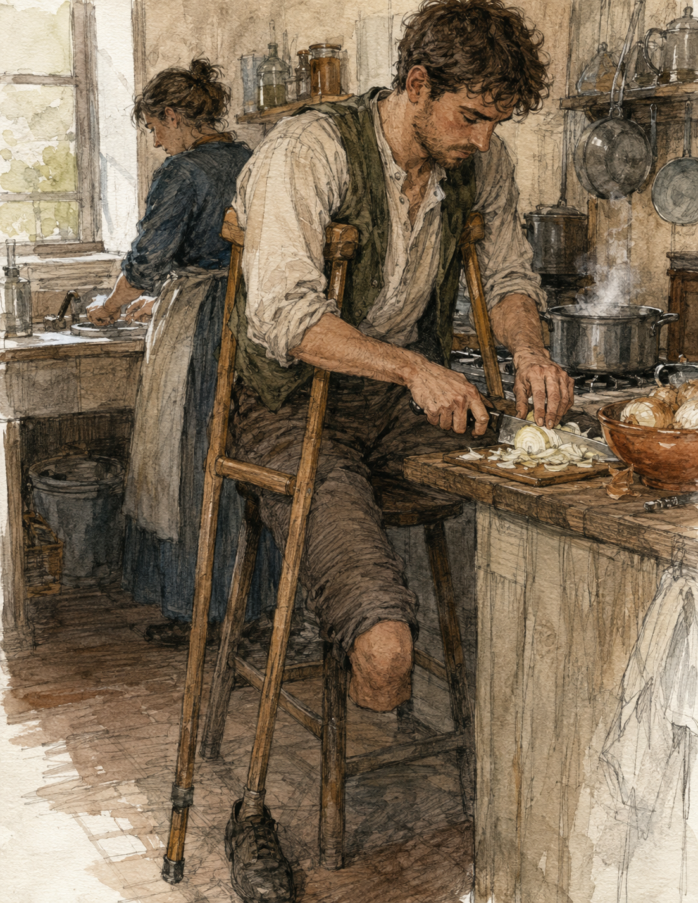
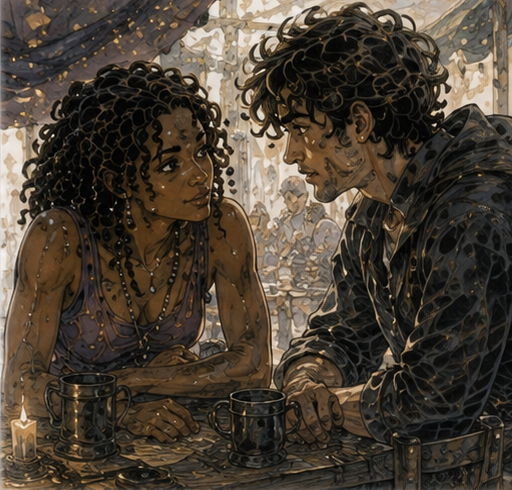

The onion argument was about bruising.
This was disappointing.
I had expected theft, fraud, inheritance, or at minimum a disputed marriage.
Instead, a woman with a basket was holding up an onion and saying, “That is half rotten.”
The seller was saying, “That is bruised.”
“It is wet.”
“Bruised things can be wet.”
“That sentence is why no one trusts you.”
I liked her immediately.
I stood at the edge of the stall and watched.
The onion was not half rotten.
It was also not good.
The woman wanted three bits back.
The seller wanted her to stop speaking.
Neither wanted my opinion.
Excellent.
Eventually the woman accepted two replacement onions and left with the expression of someone who had won less than justice but more than lunch.
The seller looked at me.
“You buying?”
“No.”
“Then move.”
I moved.
This was Carrow.
The next morning, I wanted onions.
Not because of the argument.
Probably because of the argument.
This was how advertising worked.
I went downstairs and found the keeper cutting bread.
“Can I use the kitchen?”
She looked up.
“For what?”
“Cooking.”
“That is what kitchens are for.”
“Then yes?”
“No.”
I stared.
She continued cutting bread.
“Why?”
“Last time someone asked me like that, they burned a pot.”
“I know how to cook.”
She looked at me.
I looked at her.
“In another life,” I added.
“That sounds worse.”
“I can cook now.”
“What?”
I had not planned that far.
“Eggs.”
“Use a pan.”
“I know.”
“Not the good pan.”
“Which is the good pan?”
“If you have to ask, not that one.”
This was a trap.
She pointed with the knife toward the small back room.
“After breakfast rush.”
“Thank you.”
“Clean it.”
“Yes.”
“Floor too.”
“Why would I clean the floor?”
She looked at the crutches.
Fine.
“Floor too.”
I went to buy onions.
The bruising seller was there.
He recognized me.
“You moved.”
“You told me to.”
“Good.”
“I need onions.”
He gestured to several baskets.
This was too much choice.
“What kind?”
“Onion.”
“That is not enough information.”
He squinted.
I had heard that sentence recently.
I resented it from the other side.
He pointed.
“Sweet. Sharp. Cheap.”
“Cheap is not a kind.”
“It is when you eat.”
Fair.
I bought two sharp onions.
Then one sweet onion because the distinction became personally threatening.
Then eggs.
Then bread even though the lodging had bread.
This was poor planning.
I carried the onions in a small cloth sack looped over one crutch.
Eggs were harder.
The egg seller offered a narrow basket with a handle long enough to hook over my wrist above the crutch grip.
I did not ask whether this was adaptive design.
It was a basket.
Humanity had invented handles before me.
I returned without breaking anything.
The keeper was no longer cutting bread.
She was washing cups.
“Three onions?”
“Yes.”
“For eggs?”
“Yes.”
She looked at me.
“How many eggs?”
“Four.”
She looked at the onions again.
“I like onions.”
“Apparently.”
I entered the kitchen.
It was not really a kitchen.
It was a room where heat had won.
Brick stove.
Two iron pans.
One pot.
Knife rack.
Board.
Shelves.
A bucket.
Another bucket with less confidence.
The floor was stone and slightly uneven.
I put the egg basket on the table.
Crutches against the table edge.
No.
They slid.
Against the wall.
Better.
One hand on table.
Right foot.
Standing.
Knife.
Onion.
This lasted perhaps forty seconds.

Cutting an onion with one hand while using the other to maintain stable support was stupid.
I could lean my hip against the table.
That worked until reaching for the knife changed my balance.
I could keep one crutch under my left arm.
That made the board position awkward.
I could complain.
Most promising.
Then I noticed the stool.
It was under a sack.
I moved the sack.
The stool was low and ugly.
Perfect.
I sat.
The board was too high.
Less perfect.
I put the board on my lap.
The keeper appeared in the doorway.
“No.”
“I have not done anything.”
“You are about to cut into your leg.”
“My right leg.”
“That helps.”
I looked at the board.
Fine.
She brought over a short crate.
Set it in front of the stool.
Board on crate.
The height was good.
“Thank you.”
“Do not bleed in my kitchen.”
“I was not planning to.”
“That is when people do it.”
She left.
I peeled the first onion.
The smell hit immediately.
Sharp was accurate.
I cut it in half.
Then slices.
Not even.
I had been better at this.
Or remembered being better.
The old life supplied a picture of hands moving quickly with a chef's knife.
The current knife was heavier.
The current board moved.
The current body needed one right foot placed firmly enough that twisting at the trunk did not slowly rotate the stool.
I put a rag under the board.
Better.
No philosophy.
Onion.
Second onion.
I stopped.
Three onions had been ambitious.
One and a half was already a large volume of onion relative to four eggs.
The keeper reappeared.
“You bought three.”
“I know.”
“Use three.”
“No.”
“Coward.”
“This is ratio.”
“This is breakfast.”
“It is nearly midday.”
“Then lunch.”
I put half the second onion aside.
Sweet onion untouched.
She looked disappointed in me.
Good.
The stove was the real problem.
The pan sat high.
I could sit on the stool beside it, but then I could not see the full pan easily.
I could stand with one crutch and stir with the other hand.
Possible.
Not pleasant.
I tried.
Pan.
Fat.
Onions.
Immediate sound.
Good sound.
The smell changed quickly.
Sharp to sweet.
I stirred.
One crutch under left arm.
Right hand with spoon.
Right foot planted.
Left knee bent.
Nothing under it.
The old body map tried to shift me left as I leaned toward the stove.
I corrected with the crutch.
Hot stove.
Different stakes.
I stood straighter.
That made stirring worse.
I moved the pan slightly closer to the edge.
The keeper appeared.
“No.”
“What?”
“Too close.”
“I need to reach it.”
“You need to not wear it.”
She moved it back.
“This kitchen is hostile.”
“This kitchen is mine.”
She brought the stool closer.
Not under the stove.
Beside it.
“Sit between stirs.”
“That seems inefficient.”
“Burn your onions, then.”
I sat.
Waited.
Stood.
Stirred.
Sat.
This was ridiculous.
It worked.
The onions browned.
Not evenly.
Enough.
I cracked the first egg badly.
Shell.
Removed shell.
Second egg clean.
Third.
Fourth.
Salt.
Pepper.
I had forgotten pepper.
The keeper handed me some without comment.
“Thank you.”
She grunted.
Eggs into pan.
Stir.
I had intended fried eggs over onions.
I made scrambled eggs with onions because the first yolk broke and surrender was cheaper than pride.
The result looked beige.
This was concerning.
I put it on a plate.
Too many onions.
Definitely.
The keeper leaned over.
“You made onions with egg.”
“Yes.”
“I said that.”
“No, you said eggs.”
“I changed the plan.”
“After buying three onions.”
“Stop tracking my inputs.”
She took a piece of onion from the pan.
I waited.
She chewed.
“Well?”
“Salt.”
“I added salt.”
“More.”
I added salt.
She took another.
“Better.”
“Good?”
She shrugged.
This was not enough.
“Good?”
“Edible.”
“That is not the same word.”
“No.”
I ate some.
Hot.
Onion.
Egg.
Salt.
A little too much oil.
Not enough pepper.
Actually good.
Not excellent.
Good enough that I wanted another bite.
“That is good.”
The keeper washed a cup.
“You cooked it.”
“Your standards are low.”
“You are eating it.”
“Because it is good.”
“Then stop asking me.”
I did.
I ate at the kitchen table.
The keeper kept working around me.
People came through.
A porter asked for water.
Someone returned a cup.
A woman I had seen twice before came in looking for the keeper and found her immediately because she was standing four feet away.
No one cared that I had cooked.
Good.

Halfway through the plate, Lyssa came in.
This was not expected.
She saw me.
Then the plate.
Then the onions on the table.
Then the unopened sweet onion.
“What happened?”
“I cooked.”
She looked genuinely alarmed.
“Why?”
“I wanted eggs.”
“You bought three onions.”
The keeper said, “Thank you.”
I pointed at her.
“She has been unreasonable.”
Lyssa sat across from me.
“Can I try?”
I looked at the plate.
Then at her.
“Yes.”
I pushed it toward her.
She took the fork.
One bite.
I watched.
She chewed.
“Well?”
She looked at the keeper.
She looked back.
They were communicating.
This was betrayal.
“It is good,” she said.
I narrowed my eyes.
“Actually?”
“Yes.”
The keeper made a sound.
“Better than edible?”
“Yes.”
Lyssa said, “She likes you.”
“That should not affect onion chemistry.”
Lyssa laughed.
I took the plate back.
“What are you doing here?”
“Looking for you.”
My pulse noticed.
“What for?”
“Nothing important.”
Interesting.
“Then why?”
She reached across and stole another piece of onion.
“I had time.”
There.
That was all.
I had time.
She had time.
The universe remained embarrassingly simple when left unsupervised.
“Do you want lunch?”
“I am eating your lunch.”
“You have had two bites.”
“Three.”
She stole another.
“Four.”
I looked at the pan.
There was enough.
Too much, actually.
Three onions had not been entirely irrational.
“One egg left?” she asked.
“No.”
“Bread?”
“Yes.”
I had bought unnecessary bread.
Planning restored.
I got it.
Slowly.
Both crutches.
The kitchen was small.
Lyssa did not move to help.
Good.
I brought the bread back.
We ate.
Not a date.
Probably.
No one had called it one.
The keeper worked.
We talked about nothing important.
Her morning.
A customer who had changed an order three times.
A woman who wanted a blue ribbon that was “not that blue.”
Jorren's inability to admit the pepper stall had defeated him.
My shirt.
She liked the green.
I accepted this with dignity.
Mostly.
After we finished, I stood to clean.
The keeper pointed at the stool.
“Sit.”
“I can wash.”
“You can dry.”
“I cooked.”
“And?”
“I should clean.”
“You can dry.”
This was not a moral issue.
Fine.
Lyssa washed.
I dried.
The arrangement lasted until she splashed me deliberately.
I stared at the wet spot on the green shirt.
“You did that intentionally.”
“Yes.”
“Why?”
“You were being serious.”
“I was drying a plate.”
“Exactly.”
I flicked water back at her.
This was a mistake.
The keeper said, “Out.”
We froze.
She pointed toward the door.
“Both.”
“We are cleaning,” I said.
“You are wetting.”
Lyssa was already laughing.
I put the towel down.
“We have been expelled.”
“Yes.”
“From my own lodging.”
“His kitchen.”
Important distinction.
We went outside.
My residual limb felt fine.
Hands fine.
No magic.
No training.
No work.
I had cooked lunch badly enough to be mine and well enough to eat.
Lyssa bumped my shoulder with hers.
Left shoulder.
Still the better one.
“What now?” she asked.
I considered.
The Guild.
A walk.
Cards.
Food again eventually.
Nothing.
“Don't know.”
“Good.”
She took my arm for exactly two steps before remembering the crutch made that impossible, then let go without making it a thing.
We kept walking.
Nothing announced itself.
It smelled faintly of onions.